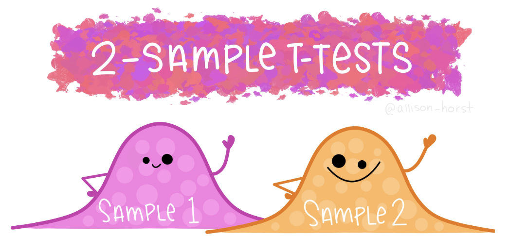
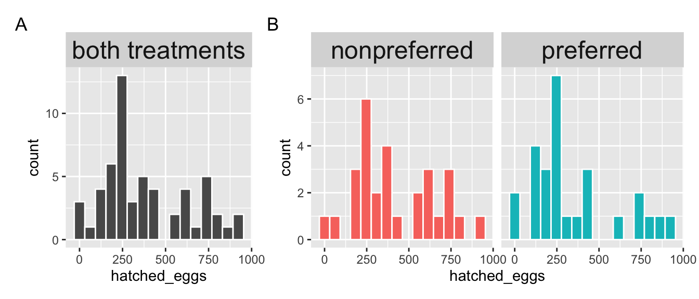

• 17. Two t Summary
Links to: Summary. Chatbot tutor. Questions. Glossary. R functions. More resources.
Chapter summary
We can naturally build from our description and analysis of a single sample to the more common scenario of comparing two samples. When data meet the assumptions of independence, lack of bias, being well summarized by the mean, normal residuals, and equal variance between groups, we can use the standard t-test machinery (with a slightly different calculation for the standard error) to test null hypotheses and estimate uncertainty. When group variances differ, we can use Welch’s t-test for unequal variance.
Chatbot tutor
Please interact with this custom chatbot (link here). I have made to help you with this chapter. I suggest interacting with at least ten back-and-forths to ramp up and then stopping when you feel like you got what you needed from it.
Practice Questions
Try these questions! By using the R environment you can work without leaving this “book”. I even pre-loaded all the packages you need!
SETUP: There are plenty of reasons to choose your partner carefully. In much of the biological world a key reason is “evolutionary fitness” - presumably organisms evolve to choose mates that will help them make more (or healthier) children. This could, for example explain Kermit’s resistance in one of the more complex love stories of our time, as frogs and pigs are unlikely to make healthy children..
To evaluate this this idea Swierk & Langkilde (2019), identified a males top choice out of two female wood frogs and then had them mate with the preferred or unpreferred female and counted the number of hatched eggs.
The R code below loads the data It is meant to be loaded onto this console below too, but if something goes wrong, just paste this into your R console outside of this book
library(dplyr); library(readr); library(ggplot2); library(janitor)
frog_link <- "https://raw.githubusercontent.com/ybrandvain/biostat/master/data/Swierk_Langkilde_BEHECO_1.csv"
frogs <- read_csv(frog_link) |>
clean_names()
Q1. Complete the code above, what pattern do you see?

Q2. Consider Figure 2, above. Which plot is more useful to evaluate the normality assumption of the two sample t-test?
Q3. Consider the output of the code above. Should you feel comfortable assuming homoscedasticity for a two sample t-test.
Q6. From this Cohens D value, we conclude that:
Q7 State the null hypothesis
Q8 State the alternative hypothesis
Q9. Which values are NOT IN the 95% confidence interval or the difference (i.e. preferred - nonpreferred) select all that apply:
Q4. For now we’ll go on with a t-test approach, regardless. So find the pooled variance in the R interface above .
\[s^2_p = \frac{\text{df}_1 \times s^2_1 + \text{df}_2 \times s^2_2}{\text{df}_1+\text{df}_2} \text{, and df}_i = n_i-1\]
- We can copy and paste R output into a calculator (that calculator might be R). I think this is best for understanding.
frogs |>
group_by(treatment)|>
summarise(MEAN = mean(hatched_eggs),
VAR = var(hatched_eggs),
N = n())# A tibble: 2 × 4
treatment MEAN VAR N
<chr> <dbl> <dbl> <int>
1 nonpreferred 414. 56118. 29
2 preferred 345. 67412. 27# Pooled variance
((56118*(29-1)) +(67412*(27-1))) / (29 + 27 - 2)[1] 61555.85OR
- We do this in one long workflow in R. I think this is the best practice for getting exact answers.
frogs |>
group_by(treatment)|>
summarise(MEAN = mean(hatched_eggs),
VAR = var(hatched_eggs),
N = n())|>
summarise(pooled_var = sum((N-1)*VAR) / (sum(N)-2) )# A tibble: 1 × 1
pooled_var
<dbl>
1 61556.Q5. Given the answers above, characterize this effect size.
Q6. From this Cohens D value, we conclude that:
Q7 State the null hypothesis
Q8 State the alternative hypothesis
Q9. Which values are NOT IN the 95% confidence interval or the difference (i.e. preferred - nonpreferred) select all that apply:
Q10) The output of the code above shows a p-value of \(\approx 0.30\), so we reject the null hypothesis. The output also shows a t-value of \(\approx 1\). If all I knew was that p-value would I be able to reject the null at \(\alpha = 0.05\)?
Q11. We fail to reject the null hypothesis. This means the null is .
Q12. If you had to make a bet, the safer bet in this case is that the null hypothesis is
📊 Glossary of Terms
Assumptions
Independence: Each observation must be independent of others; in two-sample designs, each group’s values should not influence the other.
Unbiased Sampling: Data should be collected without systematic bias so that results generalize to the population.
Normality of Residuals: Within each group, the distribution of residuals (observed – group mean) should be approximately normal.
Homoscedasticity (Equal Variance): The spread of values should be roughly the same in each group. In practice, differences smaller than a 4:1 ratio usually have little effect.
Summaries & Estimates
Group Mean (\(\bar{x}\)): The average of all observations in a group.
Variance (\(s^2\)): The spread of observations within a group, calculated as \(s^2 = \frac{\sum (x_i - \bar{x})^2}{n-1}\).
Pooled Variance ($s_p^2$): A weighted average of group variances used in the standard two-sample t-test: \(s_p^2 = \frac{df_1 s_1^2 + df_2 s_2^2}{df_1 + df_2}\)
Difference in Means (\(\Delta \bar{x}\)): The difference between the two group averages, \(\Delta \bar{x} = \bar{x}_1 - \bar{x}_2\).
Cohen’s D: A standardized measure of effect size for two means: \(d = \frac{\bar{x}_1 - \bar{x}_2}{s_p}\)
The Two-Sample t-Test
Test Statistic (t): Measures how many standard errors separate the observed difference from the null hypothesis difference (usually 0): \(t = \frac{(\bar{x}_1 - \bar{x}_2)}{s_{\overline{x_1 - x_2}}}\)
Degrees of Freedom (df): For the standard test with equal variance: \(df = (n_1 - 1) + (n_2 - 1) = n_1 + n_2 - 2\)
Welch’s t-Test: A version of the t-test that does not assume equal variance. The denominator uses each group’s variance scaled by its sample size, and \(df\) are approximated with the Welch–Satterthwaite equation.
Wilcoxon Rank-Sum Test: A non-parametric alternative to the two-sample t-test that compares the ranks of values between groups, effectively testing for differences in medians.
🛠️ Key R Functions
Functions
t.test(): Performs a one-sample, two-sample, or paired t-test. Use the formula syntaxt.test(y ~ group, data = df, var.equal = TRUE)for the standard two-sample test. By default, Welch’s test is used (var.equal = FALSE).wilcox.test(): Performs the Wilcoxon rank-sum test (Mann–Whitney U test), a non-parametric alternative that compares medians between two groups.broom::tidy(): Converts test outputs (like fromt.test()) into tidy data frames, making it easier to report and manipulate results.
Syntax
- Two-sample t-test (equal variance assumed)
t.test(y ~ group, data = df, var.equal = TRUE)- Two-sample Welch’s t-test (default in R, no equal variance assumption)
t.test(y ~ group, data = df)- Wilcoxon rank-sum test (non-parametric alternative)
wilcox.test(y ~ group, data = df, exact = FALSE)Additional resources
Videos:
Other resources: